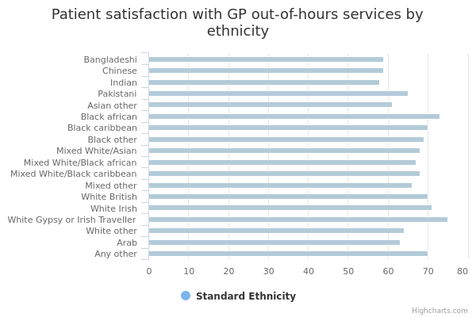

Patient satisfaction with GP out-of-hours services
The main facts and figures show that:
- more than two-thirds of patients (69%) reported a positive experience of GP out-of-hours services in 2014/15
- 73% of Black African patients reported a positive experience in 2014/15 - the highest levels of satisfaction for any ethnic group that can be reliably estimated
- 75% of Gypsy and Irish Traveller patients reported a positive experience that year, but this finding should be treated with caution as it’s based on a small number of respondents and satisfaction levels have varied widely over the years
- Indian patients were the least likely to report a positive experience (58%) in 2014/15
- each year from 2011/12 to 2014/15, patients from an Irish, African or White British background were more likely than those from other groups to report a positive experience
- each year from 2011/12 to 2014/15, Indian patients and Chinese patients were the least likely to report a positive experience
Things you need to know
When observing trends in these statistics, do not infer the existence or absence of trends outside the time period covered by this measure.
Although the number of respondents taking part each year is relatively large (about 0.9 million), caution should still be used when comparing satisfaction levels between ethnic groups or over time. This is because the sample sizes for some ethnic groups may be small.
All survey estimates are subject to a degree of uncertainty as they are based on a sample of the population. The degree of uncertainty is greater when the number of respondents is small, so uncertainty will be highest for minority ethnic groups.
This is particularly the case for people from a Gypsy and Irish Traveller background, the group found to be most satisfied with GP out-of-hours services, with roughly 75% reporting a positive experience. This figure is based on a small number of responses (39 in 2014/15) and has been variable year on year.
What the data measures
This data measures the percentage of patients satisfied with the GP out-of-hours services they get at a GP surgery. It doesn’t include GPs in hospital or other clinical settings.
The data is based on the GP patient survey, which was commissioned by the National Health Service (NHS) and conducted by Ipsos MORI.
Patients were asked to rate their overall experience of GP out-of-hours services. Those who answered ‘fairly good’ or ‘very good’ are considered to have had a positive experience.
Patients are eligible for this survey if they:
- are aged 18 or over
- have an NHS number
- have been registered with a GP for 6 months
- have not received a survey in the last 12 months
These statistics only include patients who live in England.
Why these ethnic categories were chosen
This data uses the standardised ethnic groups, based on the 2011 census:
White:
- White British
- Irish
- Gypsy, Traveller or Irish Traveller
- Any other White background
Mixed/Multiple ethnic groups:
- White and Black Caribbean
- White and Black African
- White and Asian
- Any other Mixed/ Multiple ethnic background
Asian/Asian British:
- Indian
- Pakistani
- Bangladeshi
- Chinese
- Any other Asian background
Black/African/Caribbean/Black British:
- African
- Caribbean
- Any other Black/African/Caribbean background
Other ethnic group:
- Arab
- Any other ethnic group
Satisfaction with GP out-of-hours services by ethnicity

View the numbers in a table
Patient satisfaction with GP out-of-hours services by ethnicity from 2011/12 to 2014/15
| 2014/15 | 2013/14 | 2012/13 | 2011/12 | |
| Bangladeshi | 59.1 | 66.3 | 63.8 | 65.0 |
|---|---|---|---|---|
| Chinese | 59.0 | 47.1 | 56.8 | 51.8 |
| Indian | 58.2 | 58.4 | 59.6 | 60.2 |
| Pakistani | 65.3 | 61.7 | 61.8 | 63.7 |
| Asian other | 61.2 | 60.6 | 65.2 | 62.9 |
| Black african | 73.3 | 68.8 | 67.6 | 69.3 |
| Black caribbean | 70.1 | 65.7 | 65.3 | 71.3 |
| Black other | 69.2 | 63.2 | 70.6 | 66.8 |
| Mixed White/Asian | 68.2 | 61.3 | 60.1 | 61.7 |
| Mixed White/Black african | 67.3 | 52.5 | 64.2 | 58.2 |
| Mixed White/Black caribbean | 68.1 | 64.3 | 69.7 | 77.7 |
| Mixed other | 65.9 | 67.9 | 71.1 | 69.0 |
| White British | 69.7 | 67.2 | 71.7 | 72.3 |
| White Irish | 71.3 | 68.5 | 68.4 | 73.6 |
| White Gypsy or Irish Traveller | 75.2 | 67.2 | 59.6 | 66.0 |
| White other | 64.0 | 53.3 | 67.4 | 67.5 |
| Arab | 62.7 | 65.6 | 63.2 | 67.7 |
| Any other | 69.7 | 61.4 | 63.3 | 65.1 |
| Unknown | 59.9 | 58.0 | 65.2 | 66.3 |
| All | 68.6 | 66.2 | 70.2 | 70.9 |
Summary
The data on GP out-of-hours services shows that:
- 71% of patients had a positive experience of GP out-of-hours service in 2011/12, but that fell to 69% of patients in 2014/15
- the ethnicities with the highest levels of satisfaction in 2014/15 were Gypsy and Irish Traveller, Black African, and Irish, at 75%, 73% and 71% respectively (although few Gypsies/Irish Travellers responded so caution should be used when interpreting this)
- each year from 2011/12 to 2014/15, the ethnic groups most likely to report a positive experience were Black African, Irish, and White British (though not always in the same order)
- the ethnicities least likely to report a positive experience in 2014/15 were Indian, Chinese, and Bangladeshi, at 58%, 59% and 59% respectively
- each year from 2011/12 to 2014/15, satisfaction levels for each of the Asian ethnic groups were below the national average, except in 2013/14, when Bangladeshi patients had a level of satisfaction very slightly above the average for England
Download image and data
Methodology and data type
Purpose Of Data Source
The GP Patient Survey has been designed to give patients the opportunity to feed back about their experiences of their GP surgery, and how well they are doing at providing services to patients. The survey asks patients about their experiences of their local GP surgery and other local NHS services, and includes questions about their general health. The survey includes questions about a range of issues, such as how easy or difficult it is to make an appointment at the surgery, satisfaction with opening hours, and the quality of care received from the GP and practice nurses, amongst other things.
Replies to the survey are intended to help GP surgeries understand where they can improve.
Methodology
The GP patient survey is the major survey of patient experience of GP services in England.
In years up to 2015/16, and over a whole year cycle, approximately 2.6 million surveys are sent out and approximately 0.9 million responses are received. The average response rate is 35%.
Respondents can respond either by post, online or by phone. They may request a questionnaire in a different language, in Braille or online using British Sign Language.
The GP Patient Survey results are ‘weighted’ to compensate for ‘non-response bias’, which can occur in any survey where some types of people are less likely to respond than others.
By weighting the survey results, statisticians adjust the data to account for possible differences between the demographic profile of all eligible patients in a practice and the patients who actually complete the questionnaire. The non-response weighting scheme uses characteristics from patients’ demographic profile that have been shown to influence non-response bias. These include age and gender, as well as characteristics of the area where the respondent lives, such as level of deprivation, ethnicity profile and more. The non-response weighting scheme was developed by Ipsos MORI.
Further information can be found on the GP Survey
Data type
Survey
Type of statistic
National statistic
Suppression rules
Data is suppressed if less than ten people answer the question in a particular group. This is to protect the confidentiality of respondents.
Estimation
Values are presented to one decimal place.
Further technical information
Data source details
-
NHS Digital
-
September 2012
-
August 2015
-
Unknown
-
Annual
-
The release of the indicator file is accompanied by a statistical commentary